基本操作篇
鼠标
左键点击模型，按住不放滑动鼠标，模型就会跟着你的鼠标一起移动。右键模型可以打开转盘菜单，你可以点击主页查看Petmate的养成信息，也可以点击商店来购买最需要的东西。
养成系统
Petmate是具有养成系统的，如何让Petmate成长，是由你来决定的。你可以让Petmate去工作以赚取丰厚的利润，也可以让她去学习以增加她的技能等级，这些人物等级、技能等级和金币，可以解锁更多的活动和更丰厚的奖励。除此之外，还有好感度系统，心愿体系，这些内容都会影响到Petmate与你的对话。最终Petmate会感知到你对她所做的一切，如果你愿意尝试与她对话，她会用最温柔的声音回应你。 关于如何与Petmate对话，请参考大模型配置篇
养成系统中的Buff
Buff是养成系统中比较随机的增益/减益效果，它会对未来的养成结果造成影响。通常Buff是通过活动获得的，也有一些物品使用之后可以获取到特别的Buff。托盘
托盘是Petmate的最小化图标，你可以在桌面的右下角最小化图标中找到Petmate的图标。目前提供以下几个简单的功能，如果有需要，可以联系开发者增加新的功能。
- 显示/隐藏Petmate
- 设置Petmate是否在最顶层
- 重置Petmate的位置
- 退出Petmate
大模型配置篇
目前，我们推荐使用阿里云的百炼来配置，因为模型比较全且统一管理比较方便，费用也不高，每个月还有免费额度使用。具体的操作流程如下：
- 登录阿里云
- 点击右上角的登录按钮
- 登录完成以后，可以看到这个界面
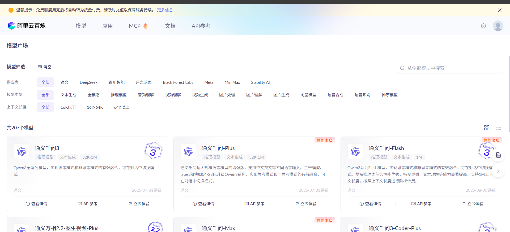
- 点击最上方的模型按钮，就会来到这个界面
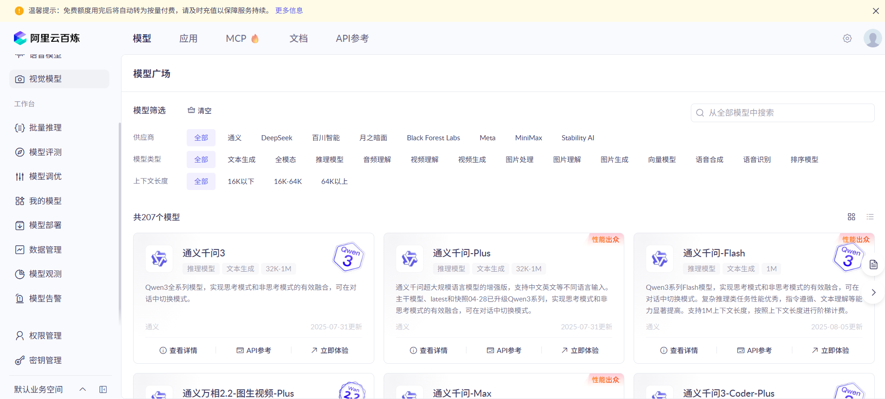
- 点击左下角的密钥管理，再点击右边的创建api密钥
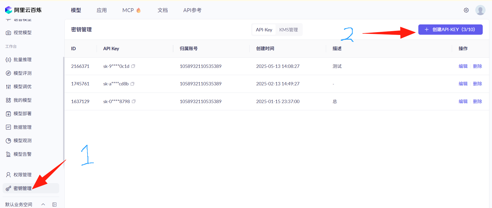
- 按要求点击确认即可创建成功
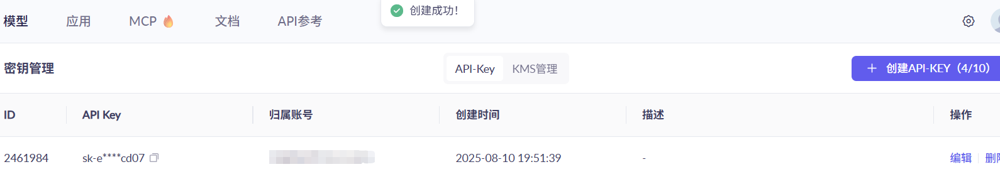
- 创建成功以后，点击右边的复制按钮，复制api密钥，然后右键Petmate的模型，点击模型配置选项
- 将复制的api密钥填写到左边聊天LLM配置中的API密钥，最后点击保存即可
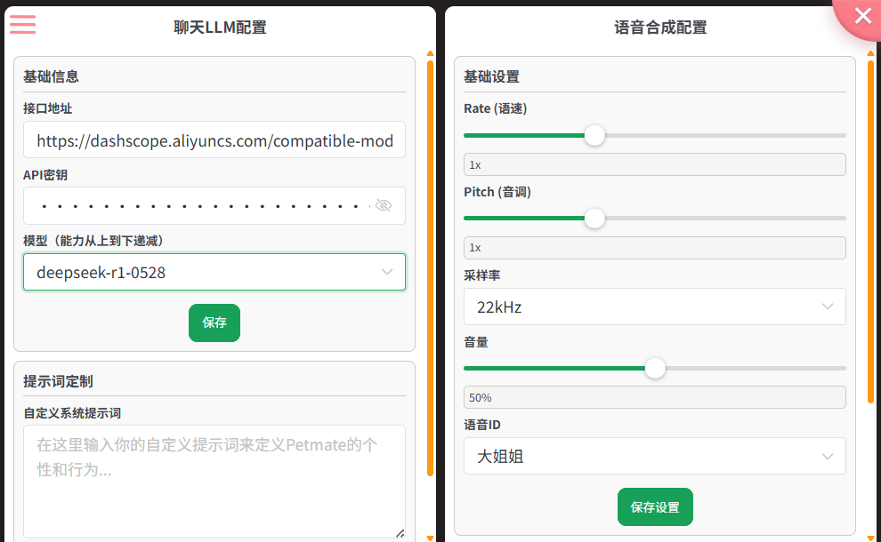
- 最后的最后就是跟Petmate正常的聊天啦！
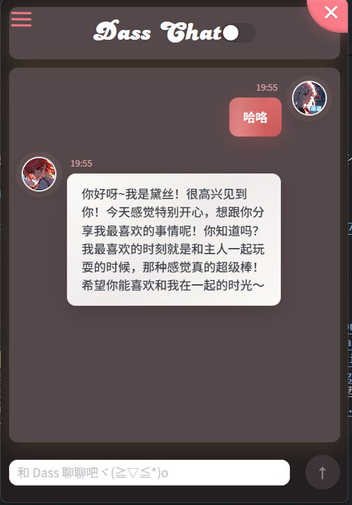
声音克隆
有些朋友想要自定义的声音，Petmate在v0.5.1这个版本开始提供自定义声音的能力，同样需要你有阿里云的账号，但如果你已经在大模型配置里配置好了正确的API-KEY，那么声音克隆对你而言，就只是提供一个音频，如果你没有API KEY，请按照大模型配置篇的步骤来配置。接下来就是如何提供音频的教程。
- 你需要一个音频文件，这个音频文件需要是.mp3/.wav格式
- 需要将音频放在一个可供下载的网站上，不可以是网盘！可以使用github，但鉴于国内大家都不是很好上github，这里就以gitee为例
- 没有gitee的请先注册一个账号
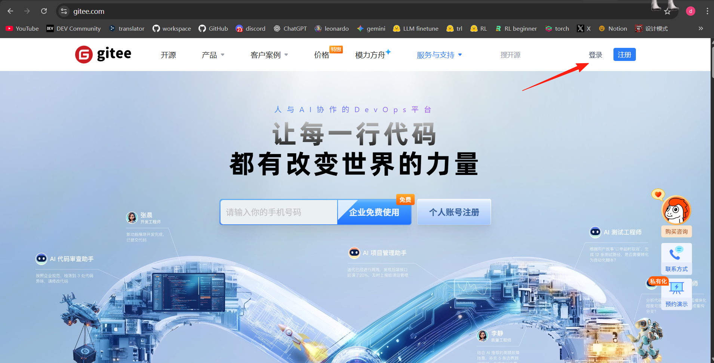
- 登录进去以后，点击新建仓库
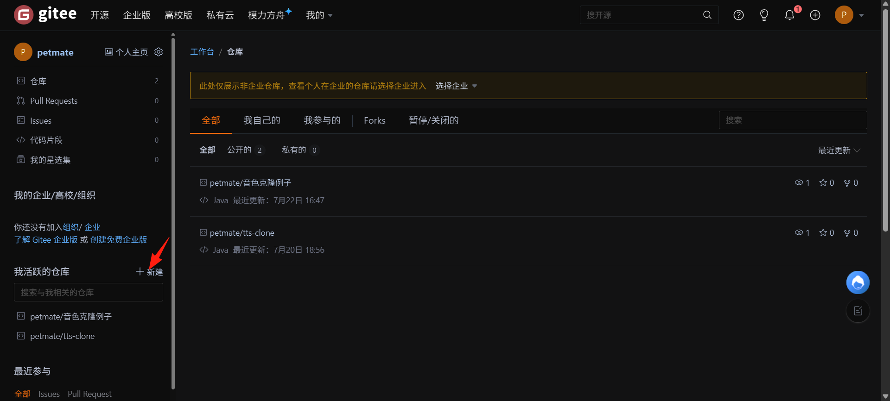
- 仓库名字可以随意写，然后一定要勾选初始化仓库，小白可以直接看着我这个图抄答案！然后点击创建
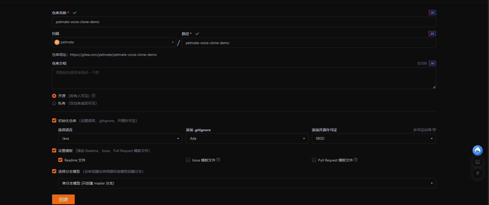
- 点击那个“+”，在点击上传文件
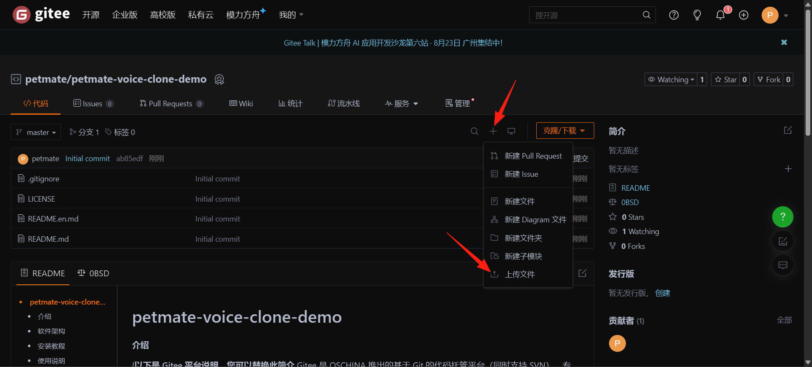
- 接着把你的音频文件上传，提交信息随便写一个都可以
- 我这里上传了一个mp3文件，然后点击它
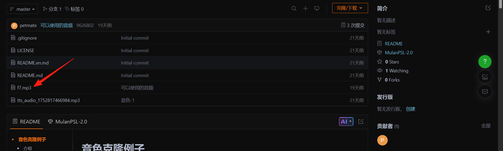
- 把这里的URL中的“blog” -> "raw"
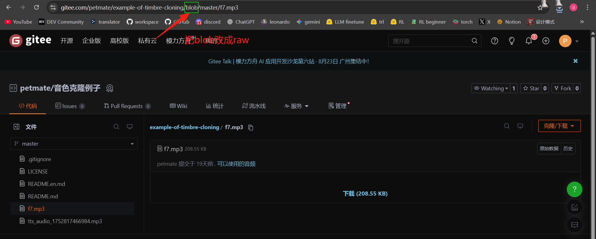
- 最后复制这个url回到Petmate的模型配置中
- 将刚刚拿到的网址链接填写到这里，你可以改变想听的内容，然后点击克隆并试听
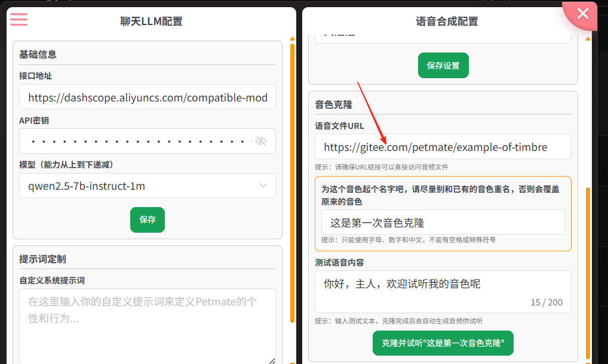
- 等待一会儿就克隆成功了，你可以点击音频的播放按钮，听声音，如果觉得还不错就点保存。一定要记得点击保存！不然它不会保存到你的音色库的
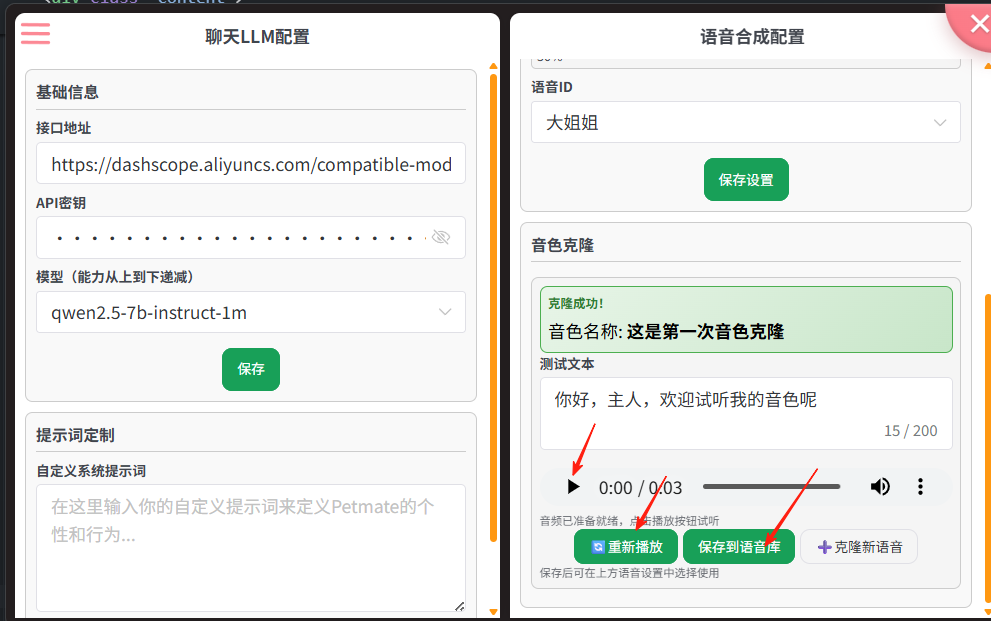
- 最后你只需要在语音合成配置中选用你刚刚合成的音色，然后点击保存，再回到聊天界面聊天的时候，就可以听到你想听到的声音啦。
常见问题QA
目前还没有。。。期待你的反馈联系开发者
Petmate有一个官方的群可以供大家来聊天、交流和反馈。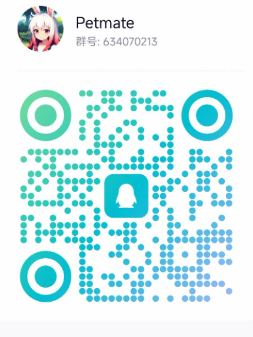